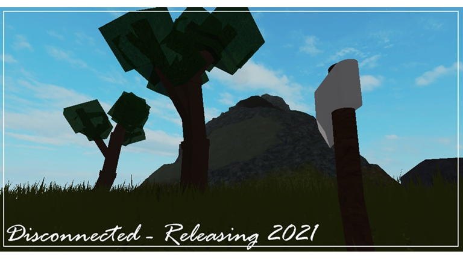
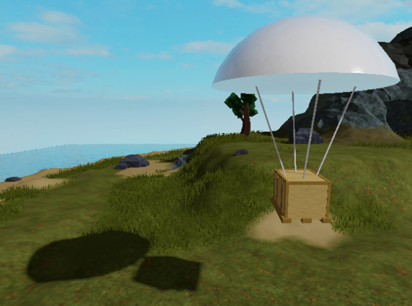

Disconnected is an open world survival game based on a small island located east of New Zealand with the aim of surviving the hazardous disasters which may occur on the island. Disconnected is planned to release in late 2021 with the aim of the game being around 50% completed to ensure the best user experience
The aim of Disconnected is to provide hours of funfill gameplay and fun! Disconnection will get the players to overcome challenges and find ways to survive from starting a fire to finding fresh water and to even building your own compound. Disconnected will allow players to play with their friends and overcome these challenges together
Disconnected is planned to release late 2021, Disconnected will be released to private alpha testing mid 2021. Disconnected will not be fully completed on release but will have most of the main and important content which will ensure hours of endless fun
Yes! An application to be an alpha tester will be available later. There are no set rules to become an alpha tester but I will be picking a different range of people on different computer operating systems and different computer specs to ensure that Disconnected will work for anyone on any device.
To add to the experience of Disconnected we have decided to add an airdrop system. This airdrop system will allow players to get resources with the click of a button. Airdrops will be purchasable with coins found around the game, these coins will allow you to purchase an airdrop, but beware! Airdrops may be stolen by other players if you are not careful.